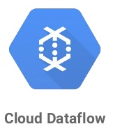
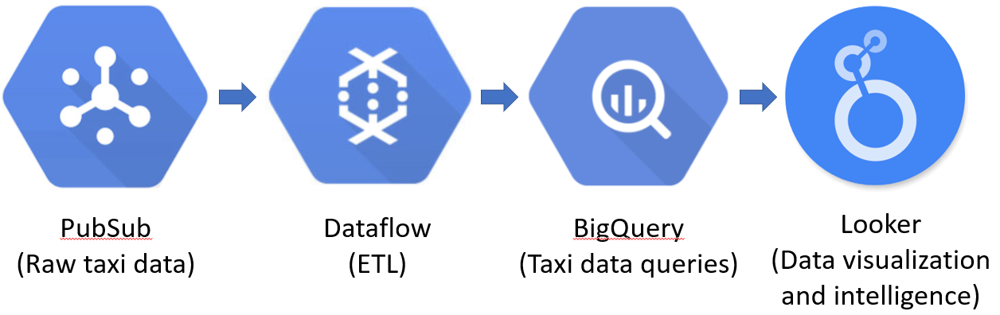
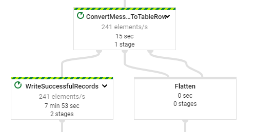
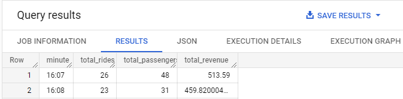
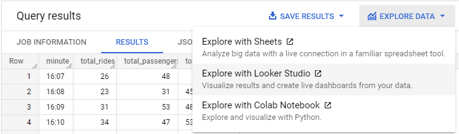
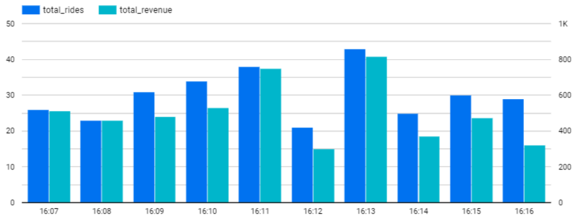

Dataflow is a managed runner that supports Apache Beam workloads. Beam is an open-source project spun out of Google to implement large scale processing of both stream and batch workloads. Beam uses a transform-based processing approach and has a programming paradigm that is similar to a functional programming one where functions do not maintain state. Beam computations are expressed in graph-like form. Input flows into the graph, is transformed via computations within nodes of the graph, and then output via nodes that serve as sinks for the results. The abstraction is useful for applications such as log ingestion and analysis from a web site or sensor data ingestion from IoT devices. One of the features of Dataflow is its ability to be 'serverless'. Processing capacity is dynamically brought up and down as the computation within the graph proceeds. This is in contrast to our prior Dataproc labs in which clusters must be explicitly allocated and deallocated by the operator.
In this lab, we'll demonstrate the programming model in action using a simple program that determines the top packages included in a Java code base.
First, clone the repository containing the code and change into its directory:
git clone https://github.com/GoogleCloudPlatform/training-data-analyst.git cd training-data-analyst/courses/machine_learning/deepdive/04_features/dataflow/python/
Then, create a Python virtual environment and activate it.
python3 -m venv env source env/bin/activate
Install the Apache Beam package that is configured for execution on Google Cloud Platform. In addition, since we will eventually deploy our pipelines onto GCP, an OAuth client package must be installed so our program can use the credentials we supply it to authorize its access on our project.
pip install -U pip pip install apache-beam[gcp] oauth2client==3.0.0
Dataflow transforms can be mapped onto their own compute nodes for execution. In Python, this is done with special syntax. Consider the code below for a pipeline that performs a string search (e.g. grep). The code instantiates p, a Beam pipeline, and configures variables specifying its input sources, output sinks, and a search term. It then specifies an expression for the computation that takes file names from input and reads lines from them (beam.io.ReadFromText(input)), checks to see if the lines start with the searchTerm (beam.FlatMap(lambda line: my_grep(line, searchTerm)), then writes the lines out to a directory (beam.io.WriteToText(output_prefix)). The expression is then evaluated via p.run().
import apache_beam as beam
import sys
def my_grep(line, term):
if line.startswith(term):
yield line
p = beam.Pipeline(argv=sys.argv)
input = '../*.java'
output_prefix = '/tmp/...'
searchTerm = 'import'
(p
| 'GetJava' >> beam.io.ReadFromText(input)
| 'Grep' >> beam.FlatMap(lambda line: my_grep(line, searchTerm) )
| 'write' >> beam.io.WriteToText(output_prefix)
)
p.run().wait_until_finish()Bring up is_popular.py in the code editor.
edit is_popular.py
Reverse-engineer the code and make note of where the input is taken from and where the output goes to by default.
Answer the following questions for your lab notebook.
getPackages() function and the splitPackageName() function. What operation does the 'PackageUse()' transform implement?CombinePerKey. What operation does the TotalUse operation implement?The operations in the pipeline mimic a Map-Reduce pattern, demonstrating Beam's ability to support it.
Answer the following questions for your lab notebook.
Go back to Cloud Shell and run the pipeline.
python is_popular.py
Go to where the output file is written out and cat the file.
In this lab, we'll be running a word counting example directly from the Apache Beam package. The code can be run locally as well as executed on nodes in GCP's Dataflow service, a managed runner that supports Apache Beam pipelines. We'll be running a word counting example from the Apache Beam package. Ensure you have activated the Python environment used in the previous lab.
When using Python virtual environments, packages are installed within the environment's directory. In the directory that you have created the Python virtual environment, bring up the code for the wordcount example that comes with the Python package.
edit env/lib/python3.*/site-packages/apache_beam/examples/wordcount.py
When the code is invoked as a module, it executes the run() function. Within the function, a pipeline p is incrementally constructed using the Beam syntax (lines, counts, output) before the entire pipeline is executed via p.run(). Examine the code that implements the function and answer the following questions for your lab notebook:
We'll first run the pipeline locally in Cloud Shell. In this case, we use the -m flag to have Python execute the module directly, specifying the output prefix as outputs.
python -m apache_beam.examples.wordcount \
--output outputsAfter running the script, perform the following and show a screenshot of the results in your lab notebook:
wc with an appropriate flag to determine the number of unique words in King Lear.head to show the top 3 words in King Lear and the number of times they appearThe pipeline specified treats every word as is. As a result, it is case-sensitive, leading to 'King' and 'KING' having distinct counts. Go back to the code editor and edit wordcount.py. Find a place in the pipeline that you can insert a stage that transforms all of the characters it receives into lowercase. The snippet below can be used:
| 'lowercase' >> beam.Map(lambda x: x.lower())Perform the following and show a screenshot of the results in your lab notebook:
Cloud Dataflow can be used to execute the pipeline in parallel in an on-demand, "serverless" fashion. To use Dataflow, we must enable the APIs for the lab. Dataflow requires Compute Engine instances to execute the code and storage buckets to store the results so those components must also be enabled.
gcloud services enable dataflow compute_component storage_component storage_api
Throughout the codelab, we'll be referencing our storage bucket and our desired region in environment variables. The commands below will do so by configuring our bucket to be the name of our project and the region to be us-west1.
export BUCKET=${GOOGLE_CLOUD_PROJECT}
export REGION=us-west1
Then, create the storage bucket if it hasn't been created already.
gsutil mb gs://${BUCKET}
We will need to create a service account to run our workload with. Change into your home directory and use gcloud to create a service account named df-lab.
cd gcloud iam service-accounts create df-lab
To run a Dataflow pipeline, we require permissions across several IAM roles. Specifically, we add:
roles/dataflow.admin to create and manage Dataflow jobsroles/dataflow.worker to create Compute Engine VMs (workers) on-demand to run the Dataflow pipeline. roles/storage.admin to create storage buckets for the resultsroles/iam.serviceAccountUser to create Compute Engine VMs that use a specific service accountroles/serviceusage.serviceUsageConsumer to use platform services.gcloud projects add-iam-policy-binding ${GOOGLE_CLOUD_PROJECT} \
--member serviceAccount:df-lab@${GOOGLE_CLOUD_PROJECT}.iam.gserviceaccount.com \
--role roles/dataflow.admin
gcloud projects add-iam-policy-binding ${GOOGLE_CLOUD_PROJECT} \
--member serviceAccount:df-lab@${GOOGLE_CLOUD_PROJECT}.iam.gserviceaccount.com \
--role roles/dataflow.worker
gcloud projects add-iam-policy-binding ${GOOGLE_CLOUD_PROJECT} \
--member serviceAccount:df-lab@${GOOGLE_CLOUD_PROJECT}.iam.gserviceaccount.com \
--role roles/storage.admin
gcloud projects add-iam-policy-binding ${GOOGLE_CLOUD_PROJECT} \
--member serviceAccount:df-lab@${GOOGLE_CLOUD_PROJECT}.iam.gserviceaccount.com \
--role roles/iam.serviceAccountUser
gcloud projects add-iam-policy-binding ${GOOGLE_CLOUD_PROJECT} \
--member serviceAccount:df-lab@${GOOGLE_CLOUD_PROJECT}.iam.gserviceaccount.com \
--role roles/serviceusage.serviceUsageConsumer
Once the service account has the necessary policies attached, we will create a service account key (df-lab.json) that will allow us to access the df-lab account.
gcloud iam service-accounts keys create df-lab.json --iam-account df-lab@${GOOGLE_CLOUD_PROJECT}.iam.gserviceaccount.comWe must also set the environment variable that can be used by our Python environment to access the service account key.
export GOOGLE_APPLICATION_CREDENTIALS=$PWD/df-lab.jsonWe can now repeat our execution, but rather than use a local runner, we can specify a DataflowRunner and a set of locations for the pipeline to take input from and to store results to.
python -m apache_beam.examples.wordcount \
--region ${REGION} \
--input gs://dataflow-samples/shakespeare/kinglear.txt \
--output gs://$BUCKET/results/outputs \
--runner DataflowRunner \
--project ${GOOGLE_CLOUD_PROJECT} \
--temp_location gs://${BUCKET}/tmp/After executing the program, which takes around 5 minutes to complete, visit Dataflow in the web console and click on the Dataflow job that was executed. Examine both "Job Graph" and "Job Metrics".
Include the following in your lab notebook:
Delete the IAM policies and the service account.
gcloud projects remove-iam-policy-binding ${GOOGLE_CLOUD_PROJECT} \
--member serviceAccount:df-lab@${GOOGLE_CLOUD_PROJECT}.iam.gserviceaccount.com \
--role roles/dataflow.admin
gcloud projects remove-iam-policy-binding ${GOOGLE_CLOUD_PROJECT} \
--member serviceAccount:df-lab@${GOOGLE_CLOUD_PROJECT}.iam.gserviceaccount.com \
--role roles/dataflow.worker
gcloud projects remove-iam-policy-binding ${GOOGLE_CLOUD_PROJECT} \
--member serviceAccount:df-lab@${GOOGLE_CLOUD_PROJECT}.iam.gserviceaccount.com \
--role roles/storage.admin
gcloud projects remove-iam-policy-binding ${GOOGLE_CLOUD_PROJECT} \
--member serviceAccount:df-lab@${GOOGLE_CLOUD_PROJECT}.iam.gserviceaccount.com \
--role roles/iam.serviceAccountUser
gcloud projects remove-iam-policy-binding ${GOOGLE_CLOUD_PROJECT} \
--member serviceAccount:df-lab@${GOOGLE_CLOUD_PROJECT}.iam.gserviceaccount.com \
--role roles/serviceusage.serviceUsageConsumer
gcloud iam service-accounts delete df-lab@${GOOGLE_CLOUD_PROJECT}.iam.gserviceaccount.com
Delete the storage bucket
gsutil -m rm -r gs://${BUCKET}

Dataflow is often used within an ETL (Extract-Transform-Load) pipeline to ingest raw streaming data into a backend data warehouse. In this lab, we'll be showing a simple example of this pattern that is commonly employed in Data Science workflows to take raw data that is being collected and to turn it into actionable business intelligence (BI).
In this lab, you will subscribe to a raw, real-time data stream of taxi rides being taken in New York City. The data stream is part of Google Cloud's public dataset and ride data is continuously being published onto a publicly accessible Google Cloud PubSub topic. From this stream, you'll deploy a continuously running ETL pipeline in Dataflow that extracts the data in the stream and transforms it into clean records to be inserted into the BigQuery data warehouse. Finally, you will run simple queries on the data and then visualize it using the Looker data studio.
In Cloud Shell, if you have not yet enabled PubSub on the project, enable it.
gcloud services enable pubsubThen, create a subscription that subscribes to the raw taxi data located on the public PubSub topic projects/pubsub-public-data/topics/taxirides-realtime
gcloud pubsub subscriptions create taxisub \
--topic=projects/pubsub-public-data/topics/taxirides-realtimeThen, pull and acknowledge the receipt of one message from the raw data stream. Examine the data returned.
gcloud pubsub subscriptions pull taxisub --auto-ackThe data that is returned is a JSON object.
The goal of our ETL pipeline will be to extract these fields and load them into a backend table in our data warehouse.
Delete the subscription.
gcloud pubsub subscriptions delete taxisubWe'll first set up the BigQuery dataset and table that will ingest the taxi data from the raw stream. Within Cloud Shell, create a dataset named taxirides.
bq mk taxiridesThen, create a table within the dataset named realtime to load the taxi ride data into. Note that we specify the schema for this table that aligns with the results of the ETL pipeline. In this case, the pipeline simply maps fields of the JSON into columns in our table as shown in the schema we include.
bq mk \
--time_partitioning_field timestamp \
--schema ride_id:string,point_idx:integer,latitude:float,longitude:float,\
timestamp:timestamp,meter_reading:float,meter_increment:float,ride_status:string,\
passenger_count:integer \
-t taxirides.realtimeFinally, create a storage bucket for use by the Dataflow service to stage intermediate data.
gsutil mb gs://${GOOGLE_CLOUD_PROJECT}-taxiDataflow comes with a number of pipeline templates that represent common tasks one would implement. One such template ingests data from a PubSub topic into BigQuery, as we are attempting to do with the taxiride data. The template is located at gs://dataflow-templates/latest/PubSub_to_BigQuery. Templates such as this one are akin to a "Zero-ETL" approach for data management since the extraction and loading of data is done automatically by the platform itself.
Bring up a serverless Dataflow pipeline using this template that will continuously read taxi ride data sent to the PubSub topic and load it into the BigQuery table created in the previous step using the template.
gcloud dataflow jobs run taxirides \
--gcs-location gs://dataflow-templates/latest/PubSub_to_BigQuery \
--region us-west1 \
--staging-location gs://${GOOGLE_CLOUD_PROJECT}-taxi/tmp \
--parameters inputTopic=projects/pubsub-public-data/topics/taxirides-realtime,\
outputTableSpec=${GOOGLE_CLOUD_PROJECT}:taxirides.realtimeThen, visit the Cloud Dataflow console in the web UI and view the running job. Wait until the job is functioning and has processed 5-10 minutes worth of raw data from the stream..

Stop the Dataflow job when a sufficient amount of data has been collected. One can use the web console or Cloud Shell to do so. For Cloud Shell, find the job's ID via the command below.
gcloud dataflow jobs list --status=activeThen, making note of the JOB_ID, cancel the job.
gcloud dataflow jobs cancel <JOB_ID> --region=us-west1Visit the BigQuery web console and navigate to the table we've created within our project at taxirides:realtime. Examine the table.
The table contains raw ride data, but in many cases, it is difficult to provide any meaningful insight on it without further processing. One of the functions that business intelligence tools provide is the ability to perform data querying and visualization on the raw data. We'll be emulating this using BigQuery and the Looker Studio data visualization tool.
First, query the table to obtain the number of rides, number of passengers, and amount of revenue for rides that have been taken during the collection period in BigQuery.
SELECT
FORMAT_TIMESTAMP("%R", timestamp, "America/Los_Angeles") AS minute,
COUNT(DISTINCT ride_id) AS total_rides,
SUM(passenger_count) AS total_passengers,
SUM(meter_reading) AS total_revenue
FROM
taxirides.realtime
WHERE
ride_status = 'dropoff'
GROUP BY
minute
ORDER BY
minute ASC
There are several options for examining the data from the query we've run. One tool for doing so that has been integrated into Google Cloud Platform is Looker Studio: a tool for generating interactive dashboards for easily generating reports and visualizations on data. From the query results of the prior query, click on "Explore Data" and bring up the query results in Looker Studio.

Then, create a Column Chart that plots the time in minutes over ascending time on the x-axis and the total number of rides and revenue on the y-axis by configuring the Dimension, Metrics, and Sort criteria of the chart similar to that shown below.

Delete the BigQuery table and dataset
bq rm taxirides.realtime
bq rm taxiridesDelete the staging storage bucket
gsutil rm -r gs://${GOOGLE_CLOUD_PROJECT}-taxi